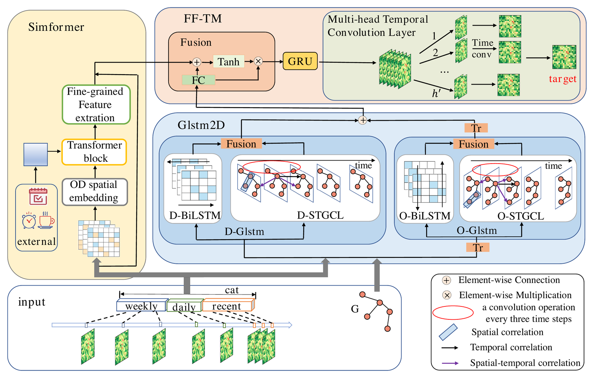

DSTCN: Exploiting dynamic spatio-temporal correlations for origin-destination demand prediction
Yongshun Gong, Piao Yu, Xu Zhang, Xinxin Zhang, Xiushan Nie, Haoliang Sun
Expert Systems with Applications, vol. 299, article 130095 (2026) · Open access, CC BY 4.0
Also indexed in: Semantic Scholar · OpenAlex · dblp · Publisher page

Quick facts
| Method name | DSTCN |
|---|---|
| Authors | Yongshun Gong, Piao Yu, Xu Zhang, Xinxin Zhang, Xiushan Nie, Haoliang Sun |
| DOI | 10.1016/j.eswa.2025.130095 |
| Task | Origin-destination (OD) demand prediction: forecasting the N x N matrix of passengers travelling from each region to every other region in upcoming time intervals |
| Method components | Glstm2D (D-Glstm and O-Glstm: BiLSTM plus spatio-temporal graph learning), Simformer (Transformer-based spatial similarity module), FF-TM (feature fusion, GRU, multi-head temporal convolution) |
| Datasets | NYC-TOD2018 and NYC-TOD2019 (NYC yellow-taxi OD demand, 69 Manhattan zones, hourly); HZMetro (80 Hangzhou metro stations, 1 to 25 January 2019, 10-minute intervals) |
| Metrics and protocol | MAE and RMSE; 6:2:2 train/validation/test split; results averaged over 10 runs |
| Baselines | 12 baselines: HA; OD demand methods GEML, MPGCN, HMOD, CMOD; urban-flow models adapted to OD (GRU, LSTM, STGCN, STSGCN, DGCN, STTN, TGCRN) |
| Headline result | MAE/RMSE 1.469/3.284 on NYC-TOD2018 and 1.273/2.909 on NYC-TOD2019, 3.04% to 4.56% below the best baseline on each metric (p < .001) |
| Corresponding author | Xu Zhang |
| Venue | Expert Systems with Applications, vol. 299, article 130095; issue dated March 2026; available online 24 October 2025 |
| Article history | Received 1 June 2025; revised 29 August 2025; accepted 17 October 2025 |
| Open access | Open access under CC BY 4.0 in a hybrid journal |
| Code and data | The paper links no code repository; data are available on request |
| BibTeX key | gong2026dstcn |
Main results
| Setting | Result | Compared with |
|---|---|---|
| NYC-TOD2018 (Manhattan yellow-taxi OD demand, next-hour forecast) | MAE = 1.469; RMSE = 3.284“Concretely, DSTCN achieves average improvements of 3.04 %, 4.56 %, 3.19 %, and 4.09 % in MAE and RMSE on NYC-TOD2018 and NYC-TOD2019, respectively, over the best baseline.” | Best baselines: MAE 1.515 (STGCN), RMSE 3.441 (DGCN); 3.04% and 4.56% lower |
| NYC-TOD2019 (Manhattan yellow-taxi OD demand, next-hour forecast) | MAE = 1.273; RMSE = 2.909“Our proposed DSTCN achieves the best performance across all metrics and datasets, with improvements being statistically significant (p < .001).” | Best baselines: MAE 1.315 (STSGCN), RMSE 3.033 (DGCN); 3.19% and 4.09% lower |
| High-demand areas: OD submatrices of the 20 stations with the highest departure demand (NYC-TOD2018 and NYC-TOD2019) | MAE = 4.952, RMSE = 7.752 (2018); MAE = 4.326, RMSE = 6.879 (2019)“DSTCN achieves relative improvements of 4.48 % and 5.75 % (MAE and RMSE) for NYC-TOD2018, and 4.50 % and 4.93 % for NYC-TOD2019” | Best baselines 2018: MAE 5.184 (STGCN), RMSE 8.225 (DGCN); 2019: MAE 4.530, RMSE 7.236 (DGCN) |
| HZMetro (Hangzhou metro OD demand, 10/30/60-minute horizons) | MAE = 0.931 / 0.924 / 0.935; RMSE = 1.827 / 1.832 / 1.827“As shown in Table 7, DSTCN consistently achieves the lowest MAE and RMSE across all forecasting horizons, outperforming all competing baselines.” | Best baseline MAE 1.030 (MPGCN, 10 min), 1.041 (MPGCN, 30 min), 1.060 (DGCN, 60 min); MAE 9.61% to 11.79% lower |
| Efficiency on NYC-TOD2018 (Table 8) | Parameters = 14.42 M; average inference = 1.204 ms/sample“The analysis shows that DSTCN intentionally trades a higher computational budget for superior accuracy.” | STGCN 0.18 M / 0.217 ms; DGCN 0.77 M / 0.203 ms; GEML 2.50 M / 0.119 ms; CMOD 0.30 M / 2.388 ms |
| Ablation on NYC-TOD2018 (Table 9) | Full model MAE = 1.469; w/o GRU 1.548; w/o Glstm2D 1.533; w/o Simformer 1.484“while grid cell features (Simformer) are helpful, area demand change features (Glstm2D) are more critical for accurate prediction” | On NYC-TOD2019 MAE, the attention-fusion variant and the w/o Mul-TCL variant (both 1.269) are slightly below the full model (1.273) |
Quoted text is verbatim from the paper.
Key points
- Glstm2D pairs a destination-side branch (D-Glstm) with an origin-side branch (O-Glstm). Each combines a BiLSTM with spatio-temporal graph learning (STGL) to model demand trends along both axes of the OD matrix.
- Simformer merges each 4 x 4 block of OD cells, adds one-hot day-of-week and hour-of-day features, and applies multi-head self-attention. FF-TM fuses both feature streams, then models time with a GRU and multi-head temporal convolution.
- On NYC-TOD2018 and NYC-TOD2019 (69 Manhattan taxi zones, hourly), DSTCN reaches MAE/RMSE 1.469/3.284 and 1.273/2.909, 3.04% to 4.56% below the best of 12 baselines on each metric (p < .001).
- On HZMetro (80 Hangzhou metro stations, 10-minute intervals), DSTCN has the lowest MAE and RMSE at 10, 30 and 60 minutes, with MAE 0.931, 0.924 and 0.935, 9.61% to 11.79% below the best baseline.
- In the NYC-TOD2018 efficiency test, DSTCN has 14.42 M parameters (baselines 0.18 to 2.50 M) and 1.204 ms/sample inference, slower than three of four baselines. Ablations show removing the GRU or Glstm2D raises MAE most.
Abstract
Accurate Origin-Destination (OD) demand prediction is fundamental to intelligent transportation systems (ITS), enabling real-time traffic management, dynamic vehicle dispatch, and efficient resource allocation in urban environments. However, OD demand exhibits complex, dynamic, and highly coupled spatio-temporal patterns that remain challenging for existing models. We propose a novel Dynamic Spatio-Temporal Correlation Network (DSTCN) for OD demand forecasting. DSTCN features three key components: (1) a bidirectional demand trend modeling module (Glstm2D) that jointly learns demand evolution from both origin and destination perspectives; (2) a Transformer-based spatial similarity module (Simformer) to dynamically extract and integrate inter-regional correlations across the OD matrix; and (3) a temporal fusion and modeling module (FF-TM) that combines and processes multi-source spatio-temporal features for next-step prediction. Extensive experiments on three large-scale real-world datasets (NYC-TOD2018, NYC-TOD2019, and HZMetro) demonstrate that DSTCN consistently outperforms state-of-the-art baselines across diverse urban scenarios.
Frequently asked questions
What does DSTCN predict?
It forecasts the N x N OD demand matrix, whose entry (i, j) is the number of passengers departing region i for region j in a time interval. The horizon is the next hour on the NYC taxi datasets and 10, 30 or 60 minutes on HZMetro. The paper presents this as support for real-time traffic management, dynamic vehicle dispatch and resource allocation.
What are the three modules of DSTCN?
Glstm2D models demand trends along both axes of the OD matrix with a destination branch (D-Glstm) and an origin branch (O-Glstm), each combining a BiLSTM with spatio-temporal graph learning. Simformer is a Transformer-based spatial similarity module: it merges 4 x 4 blocks of OD cells, adds one-hot day-of-week and hour-of-day features, and applies multi-head self-attention. FF-TM (feature fusion and time modeling) fuses the two feature streams and models their temporal evolution with a GRU and a multi-head temporal convolution layer.
Which datasets were used to evaluate DSTCN?
NYC-TOD2018 and NYC-TOD2019 are built from New York City TLC yellow-taxi trip records over 69 Manhattan zones, aggregated hourly for the full years 2018 and 2019. HZMetro, from the Alibaba Tianchi platform, holds about 58 million transaction records from 80 Hangzhou metro stations (1 to 25 January 2019), aggregated in 10-minute intervals between 6:00 and 24:00.
How accurate is DSTCN compared with baselines?
On NYC-TOD2018 and NYC-TOD2019, DSTCN reaches MAE/RMSE of 1.469/3.284 and 1.273/2.909, which is 3.04% to 4.56% lower than the best of 12 baselines on each metric, and the paper reports these gains as statistically significant (p < .001). On HZMetro its MAE is 0.931, 0.924 and 0.935 at 10, 30 and 60 minutes, 9.61% to 11.79% below the best baseline.
How large and how fast is DSTCN?
On NYC-TOD2018, DSTCN has 14.42 M parameters and takes 1.204 ms per sample at inference, against 0.18 M and 0.217 ms for STGCN and 0.30 M and 2.388 ms for CMOD. The authors say DSTCN trades a higher computational budget for accuracy: its larger size contributes to a moderate training time, yet it shows the fastest and most stable convergence among the tested models.
Is code for DSTCN available?
The paper does not link a code repository. Its data availability statement says that data will be made available on request.
How do I cite DSTCN?
Cite it as: Gong, Y., Yu, P., Zhang, X., Zhang, X., Nie, X., & Sun, H. (2026). Exploiting dynamic spatio-temporal correlations for origin-destination demand prediction. Expert Systems with Applications, 299, Article 130095. https://doi.org/10.1016/j.eswa.2025.130095 BibTeX is available at https://codezx6.github.io/papers/dstcn.html#cite and in https://codezx6.github.io/publications.bib.
中文摘要
利用动态时空相关性进行起讫点（OD）需求预测
准确的起讫点（OD）需求预测是智能交通系统的基础。本文提出动态时空相关网络 DSTCN，包含三个模块：双向需求趋势建模模块 Glstm2D 从起点与终点两个视角联合学习需求演化；基于 Transformer 的空间相似性模块 Simformer 动态提取并整合 OD 矩阵中的区域间相关性；特征融合与时间建模模块 FF-TM 融合多源时空特征，完成下一步预测。在 NYC-TOD2018、NYC-TOD2019 和 HZMetro 三个真实数据集上，DSTCN 均优于最先进基线：NYC-TOD2018 上 MAE 为 1.469，较最优基线降低 3.04%；HZMetro 上 10/30/60 分钟预测的 MAE 较最优基线降低 9.61%–11.79%。
关键词：OD 需求预测；时空建模；动态时空相关性；Transformer；图神经网络；智能交通系统
Keywords
origin-destination demand prediction spatio-temporal modeling Transformer graph neural network intelligent transportation systems OD demand matrix spatio-temporal correlation
Also referred to as: Dynamic Spatio-Temporal Correlation Network; Glstm2D (bidirectional demand trend modeling module); Simformer (Transformer-based spatial similarity module); FF-TM (Feature Fusion and Time Modeling); spatio-temporal graph learning (STGL); DSTCN_R.
Research area map and related search terms
Field path (broad to narrow): artificial intelligence › machine learning › data mining › spatio-temporal data mining › time series forecasting › intelligent transportation systems › smart cities › urban computing › traffic prediction › travel demand forecasting › origin-destination (OD) demand prediction › dynamic spatio-temporal correlation modeling › DSTCN
Task
origin-destination (OD) demand prediction OD matrix forecasting travel demand forecasting taxi demand prediction metro passenger flow prediction spatio-temporal forecasting
Method
BiLSTM spatio-temporal graph learning Transformer spatial similarity GRU temporal convolution graph neural network for OD prediction
Datasets
NYC-TOD2018 NYC-TOD2019 HZMetro (Hangzhou metro) NYC yellow taxi
Compared with
GEML MPGCN HMOD CMOD STGCN STSGCN DGCN STTN TGCRN
中文
OD 需求预测 起讫点需求预测 OD 矩阵预测 出行需求预测 出租车需求预测 地铁客流预测 时空图学习
Related areas
travel demand modeling public transit analytics metro systems ride-hailing demand taxi demand mobility on demand spatio-temporal graph neural networks Transformers for spatio-temporal data graph structure learning bidirectional LSTM temporal convolutional networks external factors
Applications
real-time traffic management dynamic vehicle dispatch fleet management resource allocation transport planning
Related benchmarks (not used in this paper)
SHMetro NYC Citi Bike OD Chicago taxi OD Beijing subway
中文 (扩展)
出行需求预测 OD 需求 起讫点矩阵 客流预测 网约车需求预测 出租车调度 车辆调度 车队管理 时空图神经网络 图结构学习 双向LSTM 时序卷积网络
Terms are grouped by role. "Related areas", "Applications" and "Related benchmarks (not used in this paper)" describe the surrounding field, not results of this paper. See the site-wide research area map.
Related papers
OD demand prediction
- BiST-IF: Enhancing origin–destination flow prediction via bi-directional spatio-temporal inference and interconnected feature evolution (Expert Systems with Applications, vol. 264, article 125679, 2025)
Other topics
- DUET: Unified Dual-Space Emotion Control for Diffusion and Flow-Matching Driven Text-to-Speech (2026)
- PhysioSER: Learning Physiology-Informed Vocal Spectrotemporal Representations for Speech Emotion Recognition (2026)
- URMDet-SimFire: Trustworthy multimodal detection with uncertainty and reliability modeling for fire and smoke analytics (2026)
- S2CMEN: A Mutually Enhancement Network for Superpixel Segmentation and Classification of Hyperspectral Image (2025)
- MR-UFP: Enhancing urban flow prediction via mutual reinforcement with multi-scale regional information (2025)
- Automatic visual recognition for leaf disease based on enhanced attention mechanism (2024)
- S3CFSL: Spatial-Spectral–Semantic Cross-Domain Few-Shot Learning for Hyperspectral Image Classification (2024)
- ST-FCL: Spatio-temporal fusion and contrastive learning for urban flow prediction (2023)
- MC-STL: Mask- and Contrast-Enhanced Spatio-Temporal Learning for Urban Flow Prediction (2023)
Cite this paper
@article{gong2026dstcn,
title = {Exploiting dynamic spatio-temporal correlations for origin-destination demand prediction},
author = {Gong, Yongshun and Yu, Piao and Zhang, Xu and Zhang, Xinxin and Nie, Xiushan and Sun, Haoliang},
journal = {Expert Systems with Applications},
year = {2026},
volume = {299},
pages = {130095},
doi = {10.1016/j.eswa.2025.130095},
issn = {0957-4174},
url = {https://doi.org/10.1016/j.eswa.2025.130095}
}Gong, Y., Yu, P., Zhang, X., Zhang, X., Nie, X., & Sun, H. (2026). Exploiting dynamic spatio-temporal correlations for origin-destination demand prediction. Expert Systems with Applications, 299, Article 130095. https://doi.org/10.1016/j.eswa.2025.130095